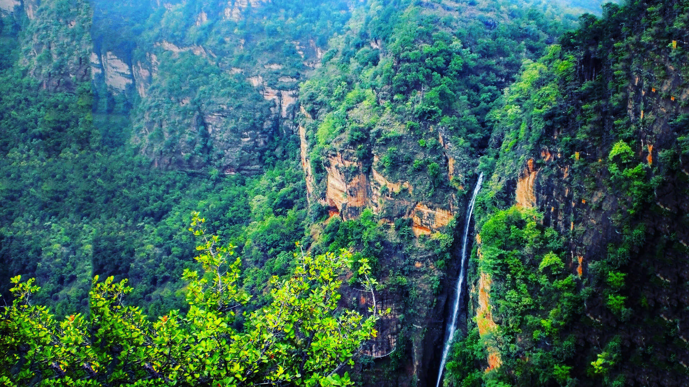
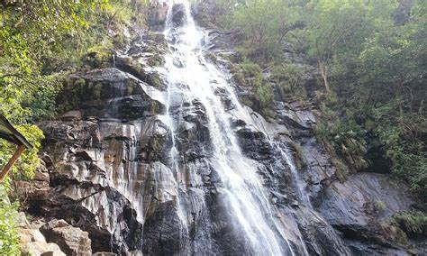

The Queen of Satpura, a hill station rich in history and natural beauty
Pachmarhi, nestled in the heart of Madhya Pradesh, India, is a charming hill station known as the "Queen of Satpura." With its lush greenery, waterfalls, caves, and serene environment, Pachmarhi offers a perfect escape for nature lovers and adventure enthusiasts. The town is situated at an elevation of 1,067 meters (3,501 feet) in the Satpura Range, making it a cool and refreshing retreat.
Pachmarhi is renowned for its stunning natural landscapes. The Apsara Vihar waterfall, also known as Fairy Pool, is a popular spot for visitors to enjoy a refreshing dip. Bee Falls, with its cascading waters, provides a picturesque setting for picnics and relaxation. The Handi Khoh, a deep ravine with steep cliffs, offers breathtaking views and is a favorite among trekkers and photographers.
Besides its natural beauty, Pachmarhi is steeped in history. The Pandav Caves, believed to have been carved by the Pandavas during their exile, are a major attraction. These five ancient rock-cut caves are now a protected monument. The town's colonial heritage is evident in its architecture, with several buildings and churches dating back to the British era, including the charming Christ Church.
Pachmarhi offers a range of adventure activities for thrill-seekers. Trekking through the dense forests and rugged terrains is a popular activity, with trails leading to scenic viewpoints such as Dhoopgarh, the highest point in the Satpura range. The Satpura Adventure Club organizes activities like paragliding, rock climbing, and camping, providing an adrenaline rush for adventure enthusiasts.
The rich biodiversity of Pachmarhi is a treat for nature enthusiasts. The Pachmarhi Biosphere Reserve, a UNESCO-designated site, is home to a variety of flora and fauna. Visitors can spot species like leopards, bison, and various birds in their natural habitat. The diverse plant life, including rare orchids and medicinal herbs, adds to the ecological significance of the region.
Pachmarhi also has a rich cultural heritage. The town hosts several festivals and events that showcase the local traditions and customs. The Pachmarhi Utsav, held annually in December, features folk dances, music performances, and a vibrant display of local crafts. The local markets are perfect for buying souvenirs and handicrafts that reflect the region's artistic heritage.